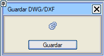
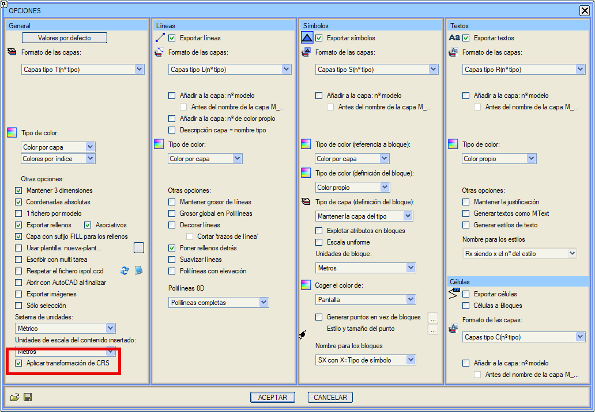
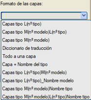
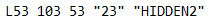
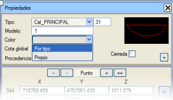
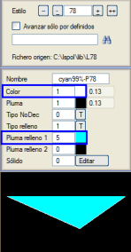
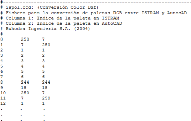
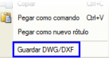
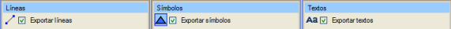
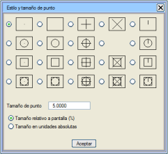

Genel Bilgiler
Dosya → Dışa Aktar → DWG/DXF seçeneği seçildikten sonra,
dosyayı doğrudan kaydetme veya dışa aktarma seçeneklerini tanımlama imkanı sunan bir iletişim kutusu görüntülenir.
Program, .dwg/.dxf dosyalarının tüm sürümleriyle uyumludur.
Eğer dışa aktarma seçeneklerini tanımlamayı seçerseniz, o zaman EDM'yi dışa aktarırken gereken her şeyi yönetmenizi sağlayan başka bir iletişim kutusu görüntülenir:

İletişim kutusu dört sütuna ayrılmıştır; her biri ISTRAM®/ISPOL®'ün temel obje sınıflarından birine (çizgiler, semboller ve yazılar) ve tüm dışa aktarma işlemini etkileyen bir diğerine (Genel) aittir.
Genel Dışa Aktarma Seçenekleri
[Varsayılan Değerler] düğmesi, iletişim kutusunu varsayılan dışa aktarma değerleriyle (yukarıdaki resimde görünenler) yapılandırır.
Öte yandan, DWG/DXF katman adlarının formatını belirtmek için birkaç seçenek vardır:
- L (tip_no) tipi katmanlar:
Her obje, adı Lx olan bir katmana gidecektir; burada L obje sınıfı (çizgi, sembol veya yazı) ve x tiptir. Örneğin, EDM'deki 20 tipi semboller, DWG/DXF'in S20 adlı katmanına gidecektir.
- M(model_no)L(tip_no) tipi katmanlar:
Her obje, adı MxLy olan bir katmana gidecektir; burada x objenin ait olduğu model numarası, L obje sınıfı (çizgi,
sembol veya yazı) ve y tiptir. Örneğin, EDM'de 7. modele ait 31 tipi bir çizgi, DWG/DXF'in M7L31 adlı katmanına gidecektir.
- M(model_no) tipi katmanlar: Her obje, adı Mx olan bir katmana gidecektir; burada x
objenin ait olduğu model numarasıdır. Örneğin,
EDM'de 2. modele ait bir yazı, DWG/DXF'in M2 adlı katmanına gidecektir.
- Çeviri Sözlüğü: Dışa aktarma için
 düğmesine basılarak sözlük kullanılır (eğer hiçbiri yoksa, varsayılan olarak dxf.cod dosyasını aramaya çalışır). düğmesine basılarak sözlük kullanılır (eğer hiçbiri yoksa, varsayılan olarak dxf.cod dosyasını aramaya çalışır).  düğmesine basılırsa, program .cod dosyasını not defteri ile açar, böylece kullanıcı onu değiştirebilir. Eğer mevcut çizimden bir .cod dosyası oluşturmak isteniyorsa, düğmesine basılırsa, program .cod dosyasını not defteri ile açar, böylece kullanıcı onu değiştirebilir. Eğer mevcut çizimden bir .cod dosyası oluşturmak isteniyorsa,  düğmesine basmak yeterlidir. Bu dışa aktarıcı, ISTRAM®/ISPOL®'ün tüm sürümlerindeki .cod dosyalarını kullanabilir. düğmesine basmak yeterlidir. Bu dışa aktarıcı, ISTRAM®/ISPOL®'ün tüm sürümlerindeki .cod dosyalarını kullanabilir.
Sözlüğü kullanırken,
kullanıcı, farklı grafik obje türlerinin, adları
dosyada belirtilen DXF/DWG dosyasının aynı katmanlarına gitmesini sağlar. Bu sözlüğü içe aktarma işlemi sırasında da oluşturma imkanı olduğunu hatırlatırız, bu nedenle dışa aktarma için de kullanmaya karar verilirse ters etki elde edilecektir.
.cod sözlüğünde, ilk sütun olarak Autocad katmanını, ikinci sütun olarak eleman sınıfını (103 çizgiler,
203 semboller, 303 yazılar), üçüncü sütun olarak objenin numarasını tanımlamalıyız.
Katman rengiyle dördüncü bir sütun ve katman çizgi stiliyle beşinci bir
sütun eklenebilir. Bu son iki sütun çift tırnak arasına yazılmalıdır.
Çizgi stili (örneğin HIDDEN2), autocad katman stillerinde yer almalıdır. Eğer içermiyorsa, Autocad'de bu stili içeren bir .dwg şablonu eklemek  gerekebilir.
- Tümünü tek bir katmana: Belirtilen adda, seçilen renkte bir katman oluşturulur ve tüm objeler bu katmana eklenir.
- Katman = Tip Adı:
Bu seçenek seçildiğinde,
DWG/DXF dosyasında oluşturulan katmanlar, o katmanı oluşturan eleman tipinin (çizgi, etiket veya sembol)
adını alır.
- L(tip_no)M(model_no) tipi katmanlar:
Her obje, adı LxMy olan bir katmana gidecektir; burada y, objenin
ait olduğu model numarası, L obje sınıfı (çizgi,
sembol veya etiket) ve x tiptir. Örneğin,
EDM'de 7. modele ait 31 tipi bir çizgi, DWG/DXF'in L31M7 adlı katmanına gidecektir.
- L(tip_no)_ModelAdı tipi katmanlar:
Her obje, adı Lx_ModelAdı olan bir katmana gidecektir; burada L
obje sınıfı (çizgi, sembol veya etiket), x tip ve ModelAdı
objenin ait olduğu modelin adıdır.
- M(model_no)TipAdı tipi katmanlar: Her obje, adı MxTipAdı olan bir katmana gidecektir; burada x
objenin ait olduğu model numarası ve TipAdı tipin adıdır.
- M(model no)L(tip no)TipAdı tipi katmanlar: Bu seçenek seçildiğinde, model numarası ile adı arasına çizgi numarası eklenir.
Ayrıca, DWG/DXF'deki renk davranışını belirtmek için birkaç olası seçenek vardır:
- Özel renk: Objeler, EDM'de renklendirildikleri renkle aynı olan kendi renklerine sahiptir.
- Katmana göre renk: Objeler,
ait oldukları DWG/DXF katmanının rengini alırlar (varsayılan
seçenek). Örneğin, eğer katman formatında Tt tipi katmanlar veya MmTt tipi katmanlar
seçeneği seçilmişse, DWG/DXF'in L31 katmanına ait çizgiler,
EDM'de karşılık gelen 31 numaralı çizgi tipinin rengini alacaktır. Ve eğer seçilen seçenek Mm tipi katmanlar ise, o zaman DWG/DXF katmanının rengi EDM modelinin rengine karşılık gelecektir.
- Bloğa göre renk: Objeler, ait oldukları DWG/DXF bloğunun rengini alırlar.
- İndekse veya RGB'ye göre renk: İlk durumda (varsayılan seçenek), program AutoCAD® paletine göre en yakın rengi hesaplamaya çalışacaktır.
RGB (kırmızı, yeşil, mavi) seçilmesi durumunda, DWG/DXF'deki objeler
EDM ile aynı renge sahip olacak, ancak genel olarak bu paletin renkleriyle
eşleşmeyecektir.
Hem katmanların formatı hem de renk türü her
obje sınıfı için ayarlanabilir, ancak bu dışa aktarma özelliklerini Genel sütunundan seçmek, bu özelliği üç obje sınıfı için de değiştirir.
Diğer genel seçenekler şunlardır:
- 3 boyutu koru:
Bu seçenek etkinse, çoklu doğrular ve semboller üç
boyutlu olarak yazılır, aksi takdirde Z bileşeni yok sayılır.
- Mutlak koordinatlar:
Bu seçenek etkin olduğunda (varsayılan seçenek), tüm
koordinatlar (0,0)'dan itibaren toplam ötelemeleriyle yazılır.
Aksi takdirde, tüm koordinatlar mevcut Xmin ve Ymin değerlerine göreli olarak yazılır.
- Model başına bir dosya:
Bu seçenek etkinleştirilirse, her model ayrı bir
dosyaya yazılır (çıktı dosyasının adı verilirken belirtilecek olan ad temel ad olarak kullanılacaktır). Eğer seçenek
etkin değilse, tüm modeller tek bir dosyaya yazılır.
- Taramaları dışa aktar: Taramaları dışa aktarmak istiyorsanız, bu seçenek etkin olmalıdır. Aksi takdirde, taramalar yok sayılır.
İlişkisel seçeneği de işaretlenirse, oluşturulan taramaların sınırları, bunu destekleyen herhangi bir başka CAD programından yönetilebilir.
- Taramalar için FILL sonekli katman: Istram'daki
dolgulu çizgiler,
dış hat ve iç kısımdan oluşur.
Dış hat, L78 gibi iç kısmından farklı bir renge sahip olabilir.
Autocad'de dolgulu çizgiler tek bir obje olarak ele alınır.
Bu kutucuk, dolgunun ve dış hattın renklerini ayırt etmek için
etkinleştirilir. Böylece Autocad'de, belirli bir renkteki
dış hatta karşılık gelen L78 ve başka bir renkteki
dolguyu temsil eden L78FILL oluşturulacaktır.
- Şablon kullan: Bu seçenek işaretlenirse, düğmesine basılarak belirtilen şablon kullanılır ( .dwt, .dwg ve .dws dosyaları).
- Çoklu görev ile yaz:
Bu kutucuk işaretlendiğinde, program, dosya oluşturma süreci için
bağımsız bir yürütme iş parçacığı başlatarak çok çekirdekli bir
işlemcinin özelliklerinden yararlanır. Bu
şekilde, kullanıcı .dwg/.dxf dosyasının oluşturulmasını
beklemeden programla çalışmaya devam edebilir. Özellikle çok büyük dosyaların oluşturulması için kullanışlıdır.
- ispol.ccd dosyasını dikkate al: .edm dosyası ile .dxf dosyası arasındaki renk çevirisini kolaylaştırmak için, kütüphanede, renk dönüşümünü otomatikleştiren ve bu kutucuk işaretlendiğinde kullanılan ispol.ccd dosyası bulunur. Bu dosya, ISTRAM ®/ISPOL® paletinin (Ayarlar > Renk Paleti açılır menüsü) indeksi ile DWG/DXF paletinin indeksi arasındaki eşleşmeyi içeren bir tablo içerir. Dosya aşağıdaki yapıya sahiptir:

Üçüncü sütun, program Yazdırma modunda veya Kalemler modunda olduğunda kullanılacak DWG/DXF paletinin indeksine karşılık gelir.
düğmesine basılırsa, program ispol.ccd dosyasını not defteri ile açar, böylece kullanıcı onu değiştirebilir. Değiştirildikten sonra, dosyayı belleğe yeniden yüklemek ve böylece dışa aktarma için dikkate alınmasını sağlamak için düğmesine basmak gerekecektir.
- Bitince AutoCAD ile aç:
Bu seçenek işaretliyken, DWG/DXF dosyası yazma işlemi bittiğinde,
oluşturulan dosyayı açmak için DWG/DXF uzantılı dosyalarla ilişkilendirilmiş yazılım başlatılır (örneğin, AutoCAD®).
- Görüntüleri dışa aktar: Bu seçenek etkinleştirilirse, haritada bulunan görüntüler de DWG/DXF dosyasına aktarılır.
- Sadece seçim:
Eğer elemanlar seçiliyse ve bu kutucuk etkinleştirilirse, sadece
bu elemanlar DWG/DXF dosyasına yazılır. Bu seçenek,
elemanlar seçiliyken gösterilen bağlam menülerinde de yansıtılır.
x elemanı seçip farenin sağ tuşuna tıkladığımda DWG/DXF Kaydet seçeneğini elde ederim.
- Birim sistemi: Metrik veya İmparatorluk
- Eklenen içeriğin ölçek birimleri: Santimetre, Metre, Kilometre...
Çizgiler, Semboller, Hücreler ve Yazılar için Özel Dışa Aktarma Seçenekleri
Daha
önce açıklandığı gibi, her obje sınıfı, her biri için belirtilen
katman formatını ve renk türünü takip edebilir. Ayrıca, bir obje sınıfının dışa aktarılıp aktarılmayacağını belirtmek de mümkündür:

Çizgiler için özel seçenekler:
- Katmana model no ekle:
Dışa aktarılan katmana, içinde bulunduğu modelin numarasını sonek olarak
ekler. Bu seçenek etkinse, Katman adından önce M_... seçeneğini etkinleştirmeye izin verilir.
- Katmana özel renk no ekle:
Bu kutucuk etkinleştirildiğinde, eğer herhangi bir çoklu doğrunun özel rengi varsa,
çoklu doğrunun renginin sonek olarak eklendiği yeni bir katman oluşturulur.
- Katman açıklaması = tip adı: Katman tipinin adını, katmanın açıklamasına aktarır.
- Çizgi kalınlığını koru:
Bu kutucuk etkin olduğunda, çizgilerin kalınlığı çıktı
dosyasında korunur ve bu kalınlık daha sonra
DWG/DXF'te görülebilir. Eğer kutucuk etkin değilse, objeler
varsayılan kalınlıkla oluşturulur.
- Çoklu Doğrularda Genel Kalınlık:
Çizgi tipinin kalınlığını, oluşturulacak
2B çoklu doğrunun genel kalınlığına dönüştürmeyi sağlar. 3 boyutu koru seçeneği ile uyumlu değildir.
- Çizgileri Detaylandır: Bu kutucuk etkinleştirildiğinde, çizgiler DWG/DXF'e detaylandırılmış olarak aktarılır.
- ‘Çizgi segmentlerini’ kes:
Bu seçenek, önceki işaretliyken kullanılabilir ve bir
çizgi stili oluşturup onu çoklu doğruya atamak yerine,
detaylandırılmış çoklu doğrunun sahip olduğu segment sayısı kadar çizgi çizer.
- Taramaları arkaya gönder:
Bu kutucuk işaretliyse (varsayılan seçenek), o zaman önce
taramalar sonra çizgiler oluşturulur, böylece çizgi sınırlarının üzerine
binmeleri önlenir.
- Çizgileri yumuşat: Bu seçenek etkin olduğunda, yumuşatılmış çizgiler çıktı dosyasında oluşturulur.
- Kotlu Çoklu Doğrular:
Bu seçenek etkin olduğunda, bir çoklu doğrunun tüm köşe noktalarının kotları eşit olduğunda (örneğin, bir eş yükselti eğrisi), bu 2B bir çoklu doğru olarak dışa aktarılır ve kotu, köşe noktalarının kotu olarak alınır.
- 8D çizgilerinin dışa aktarımı: Burada, 8D çizgilerinin DWG/DXF'e nasıl aktarılacağı belirtilir: ayrı çizgiler ve yaylar olarak mı yoksa tam çoklu doğrular olarak mı.
Öte yandan, EDM'de kapalı olan çoklu doğrular,
çizim DWG/DXF'e aktarıldığında hem 2B çoklu doğrular hem de 3B çoklu doğrular durumunda her zaman kapalı özelliğine sahip olurlar.
Semboller için özel seçenekler:
- Renk türü (blok tanımı):
Bu, blokları oluşturan objelere uygulanan renktir,
yani bloğun geometrisini tanımlayan objelere (blok referansının rengiyle karıştırılmamalıdır). Diğer
durumlarda olduğu gibi, olanakları özel renk, katmana göre ve bloğa göredir.
- Katman türü (blok tanımı):
Eğer sembole ait herhangi bir obje hiçbir tipe karşılık gelmiyorsa,
o zaman patlatıldığında geldiği sembolün katmanına gider (veya diğer seçenek olan katman 0'a).
- Bloklardaki öznitelikleri patlat:
Bu kutucuk işaretlenirse, blok eklemelerinin öznitelikleri
bağımsız metinler olarak patlatılır. Bu, etiketler durumunda kullanışlıdır,
çünkü bu şekilde her birinin stili
DWG/DXF'te bağımsız olarak değiştirilebilir.
- Tek tip ölçek: Bu seçenek etkin olduğunda, X ve Y'de aynı ölçeğe sahip semboller, Z'de de aynı ölçeğe sahip olur.
- Ekran veya kağıt rengini al: Bu şekilde, Ekran modunda veya Kağıt modunda olunmasından bağımsız olarak, semboller görüntüleme moduna göre istenen renkle dışa aktarılabilir.
- Bloklar yerine noktalar oluştur:
Bu seçenekle, belirli EDM sembol tiplerinin, blok
referansları yerine DWG/DXF dosyasında noktalar olarak dışa aktarılması belirtilebilir. Üstteki
düğmesine basıldığında, nokta olarak dışa aktarılacak sembol tipleri seçilir,
alttaki düğme ise DWG/DXF'deki nokta tipini ve boyutunu seçmeyi sağlar.
- Bloklar için ad:
Blokları, onları oluşturan sembolün tip adıyla oluşturma
imkanı. Bu şekilde, artık bloklar şu ada sahip olabilir:
- SXXXX, burada XXXX sembolün tip numarasıdır
- Sembol tipinin adı
Hücreler için özel seçenekler:
- Hücreleri dışa aktar:
Eğer hücreleri dışa aktarmak istiyorsanız, bu seçenek etkin olmalıdır. Aksi
takdirde, hücreler yok sayılır.
- Hücreleri bloklara:
Program, hücreleri temel
objelere (çizgiler, semboller ve yazılar) ayırır ve elde edilen her obje sınıfıyla,
katmanların formatı ve renk türü açısından geri kalanıyla aynı şekilde
işlem yapar, eğer bu seçenek işaretli değilse; işaretliyse, hücrenin içeriğiyle bir blok oluşturur.
Yazılar için özel seçenekler:
- Hizalamayı koru:
Bu kutucuk işaretlendiğinde, orijinal metnin hizalaması
korunmaya çalışılır. Yine de, ISTRAM ®/ISPOL®'ün
DWG/DXF formatından daha fazla hizalama olanağına sahip olması nedeniyle eşleşme mükemmel değildir, bu nedenle
devre dışı bırakılması önerilir. Bu durumda, metnin hizalaması
her zaman sol-alttır.
- Metinleri MText olarak oluştur: Metni birden çok satırda düzenlemeyi sağlar.
- Yazı stilleri oluştur: Bu kutucuk işaretlendiğinde, ISTRAM®/ISPOL®'de kullanılan stiller DWG/DXF'te oluşturulur. Metinler, TrueType yazı tipleri ve DWG/DXF formatıyla eşleşen bazı ISTRAM®/ISPOL® yazı tipleri durumunda stillerini korur.
- Stiller için ad: Oluşturulan stillerin sahip olacağı adı yapılandırmayı sağlar:
- Rx şeklinde, burada x yazı stilinin numarasıdır.
- ISPOL$stil_no stilinin adı, yani yazı stilinin kendi adı ve ardından numarası.
- ISPOL stilinin adı, yani sadece yazı stilinin kendi adıyla.
Etiketlerin, sembollerin ve süslü çizgilerin dışa aktarılması için, ISTRAM®/ISPOL®'ün Detaylı modda
olması gerekir, aksi takdirde sadece süslenmemiş çoklu doğrular dışa aktarılacaktır (YAZDIRMA'da sayfa yapılandırma seçenekleri dikkate alınır).
Son olarak, bu dışa aktarma tablosunun yapılandırmasını .opc uzantılı bir dosyaya  düğmesiyle kaydetmek mümkündür,
böylece sonraki dışa aktarmalarda kullanılabilir. Bir
yapılandırma dosyasını yüklemek için, düğmesiyle kaydetmek mümkündür,
böylece sonraki dışa aktarmalarda kullanılabilir. Bir
yapılandırma dosyasını yüklemek için,  düğmesine bastıktan sonra onu seçmek yeterlidir. düğmesine bastıktan sonra onu seçmek yeterlidir.
Dışa aktarma seçenekleri yapılandırıldıktan sonra (varsayılan olarak en yaygın olanlar işaretlidir), işleme devam etmek için [Tamam] düğmesine basılmalıdır.
Ardından dosya seçici açılır, burada çıktı dosyasının adı ve formatın sürümü
belirtilmelidir.
|